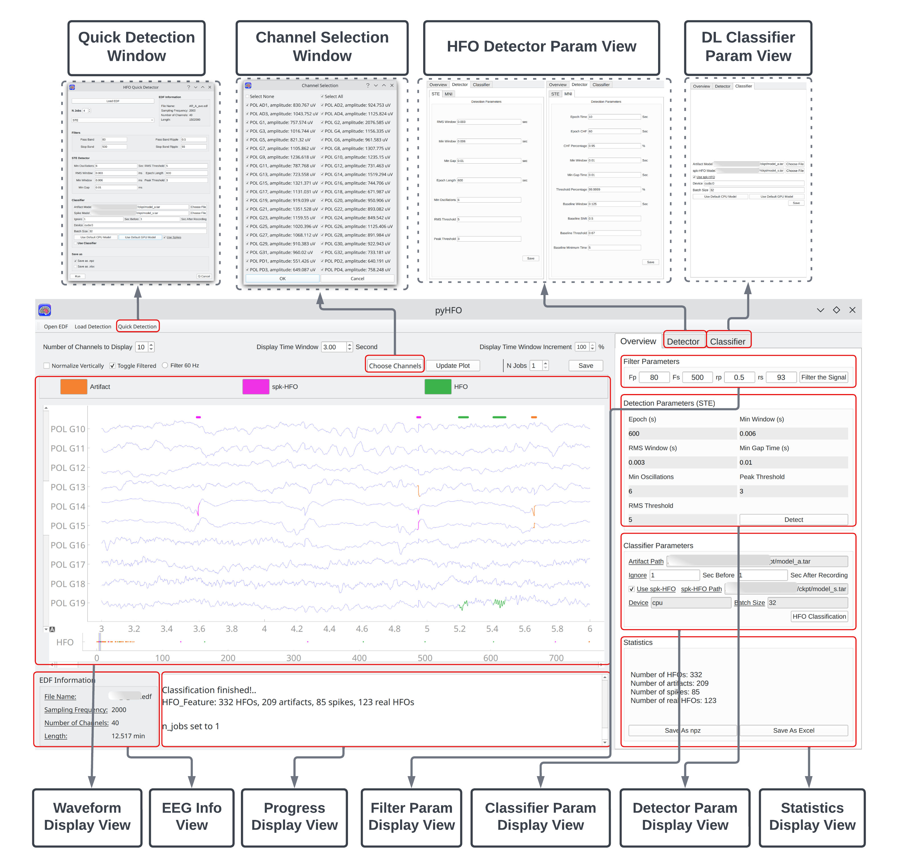

In the context of epilepsy studies, intracranially-recorded interictal high-frequency oscillations (HFOs) in EEG signals are emerging as promising spatial neurophysiological biomarkers for epileptogenic zones. While significant efforts have been made in identifying and understanding these biomarkers, deep learning is carving novel avenues for biomarker detection and analysis. Yet, transitioning such methodologies to clinical environments is difficult due to the rigorous computational needs of processing EEG data via deep learning. This paper presents our development of an advanced end to end software platform, PyHFO, aimed at bridging this gap. PyHFO provides an integrated and user-friendly platform that includes time-efficient HFO detection algorithms such as short-term energy (STE) and Montreal Neurological Institute and Hospital (MNI) detectors and deep learning models for artifact and HFO with spike classification. This application functions seamlessly on conventional computer hardware. Our platform has been validated to adeptly handle datasets from 10-minute EEG recordings captured via grid/strip electrodes in 19 patients. Through implementation optimization, PyHFO achieves speeds up to 50 times faster than the standard HFO detection method. Users can either employ our pre-trained deep learning model for their analyses or use their EEG data to train their model. As such, PyHFO holds great promise for facilitating the use of advanced EEG data analysis tools in clinical practice and large-scale research collaborations.

Fig 1. : The overview of the application
| Linux | Linux | Windows | Windows | OS X | OS X | |
| STE | MNI | STE | MNI | STE | MNI | |
| RIPPLELAB | 372.83 | 5647.12 | - | - | - | - |
| pyHFO single-core | 57.43 | 971.35 | 34.57 | 933.31 | 35.90 | 659.63 |
| pyHFO multi-core | 5.18 | 83.30 | 9.03 | 113.59 | 7.56 | 114.35 |
Table 1: omparative Analysis of Runtime in RIPPLELAB and PyHFO: Detection of All Events from 10-Minute Data Segments Across 19 Patients (measured in minutes).
@article{zhang2023pyhfo,
title={PyHFO: Lightweight Deep Learning-powered End-to-End High-Frequency Oscillations Analysis Application},
author={Zhang, Yipeng and Liu, Lawrence and Ding, Yuanyi and Chen, Xin and Monsoor, Tonmoy and Daida, Atsuro and Oana, Shingo and Hussain, Shaun Alexander and Sankar, Raman and Fallah, Aria and others},
journal={bioRxiv},
pages={2023--08},
year={2023},
publisher={Cold Spring Harbor Laboratory}
}